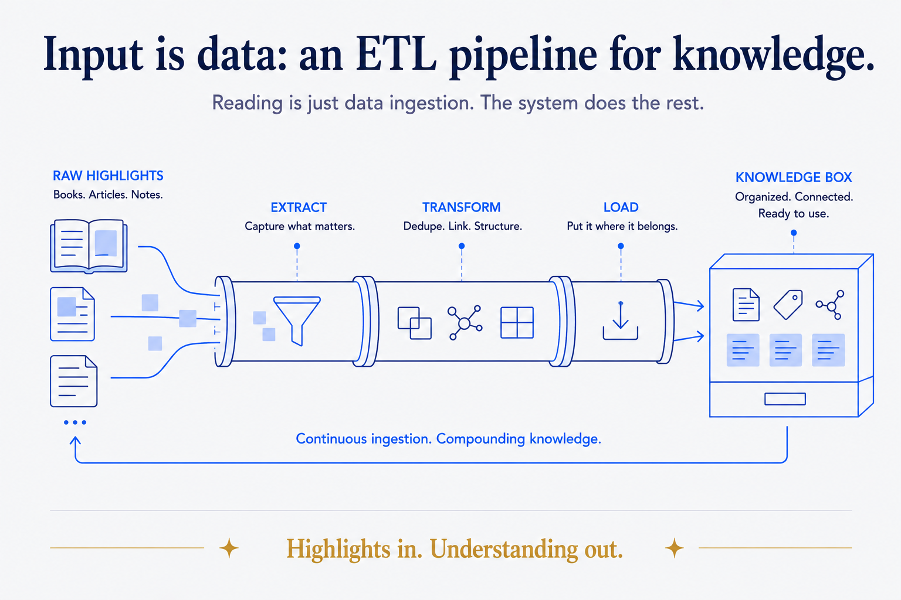
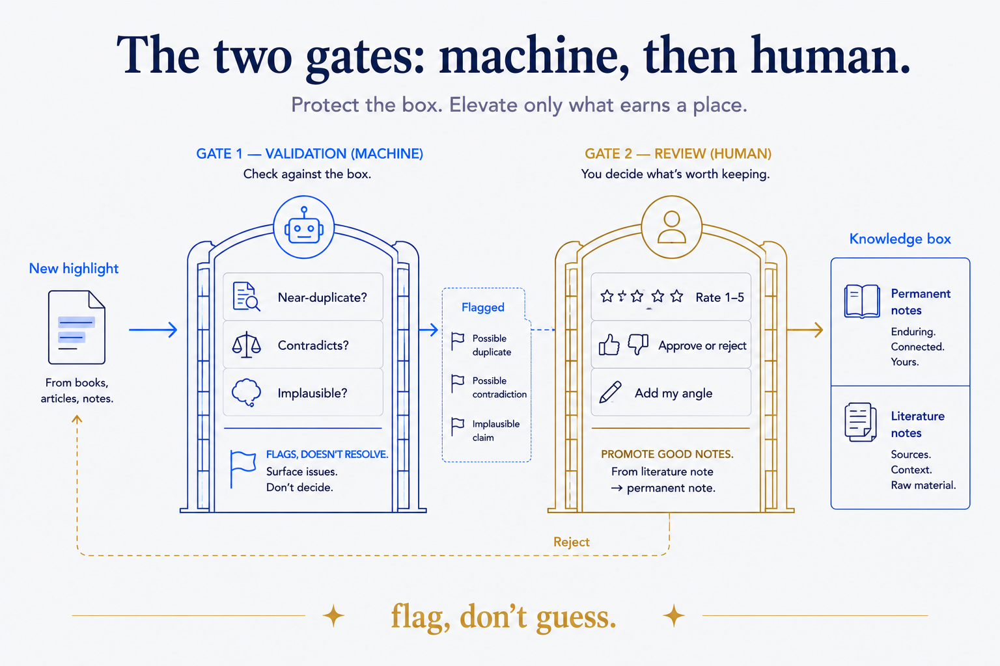

Niklas Luhmann published 70 books and over 400 articles from a box of index cards. The method — atomic notes, linked to each other, accumulating into a "second mind" you could have a conversation with — is the most admired knowledge system of the last century. It is also the one almost nobody sustains.
I know why I bounced off it three times: the labor. Reading a book and hand-writing a literature note for every idea. Deciding, by hand, which existing note each new one links to. Hunting for contradictions across hundreds of cards. Re-filing. The payoff is real but it arrives years later, and the daily cost is brutal. Most people quit in week three, having built a beautiful, half-empty box.
Here's the thing the AI age changes. Luhmann's method didn't fail on its ideas — atomicity, linking, emergence-over-hierarchy are all correct. It failed on its economics. And the economics are exactly what an AI inverts. So I rebuilt it: same principles, opposite effort curve. I call it Zettelkasten 2.0, and the whole design rests on one rule — the AI does the labor; you keep the judgment.
The effort inversion
Put the two side by side and the shift is obvious:
| Zettelkasten 1.0 (manual) | Zettelkasten 2.0 (AI-age) | |---|---| | You hand-write every literature note | AI extracts the ideas from a source | | You decide links by hand | AI proposes links (supports / contradicts / extends) | | You hunt for contradictions | AI validates the corpus — overlap, contradiction, plausibility | | You file and re-file | AI attributes author + topic, rolls up the maps-of-content | | You do everything → you quit | You do one thing: review, rate, decide |
Everything that made the box expensive to maintain — extraction, linking, contradiction-hunting, filing — is now machine work. What's left for the human is the part that was always the actual point: judgment. Which idea is worth keeping. How good it is. What it connects to in your thinking. The leap from "what they said" to "what I now believe."
That leap is the one move an AI genuinely cannot make for you, and 2.0 is built to protect your time for exactly it.
Input is data: an ETL pipeline for knowledge
If you've done any data engineering, the architecture will feel familiar — because it is one. I treat reading as an extract-transform-load pipeline, and the most important stages come first:
CURATE → INGEST → FILTER → EXTRACT → VALIDATE → REVIEW → ROLL-UP → SERVE
│ │ │ │ │ │ │ │
source pull focus- highlight rules YOU rate topic article/
canon content match atoms check + approve maps workshopThe front half is the part most "AI note-taking" tools skip, and it's where quality is actually decided:
- Curate. A source canon — the authors, sites, and books worth reading at all, each with a quality rating. Nothing enters the pipeline that isn't from a source I've vetted once.
- Filter. A focus profile scores incoming material against the handful of areas I'm actually building toward, and hard-excludes the rest, before any extraction effort is spent. Curate good sources, filter ruthlessly, and only then extract. Quality output is downstream of quality filtering — you cannot summarize your way out of a bad reading diet.
Only after those gates does the AI extract atomic highlights (I borrow Readwise's word — these are curated extracts, one idea each, attributed to their author with a verbatim quote).

The two gates: machine, then human
Extraction produces candidates, not keepers. Two gates stand between a raw highlight and something I'll build an article on.
Gate one — validation (machine). Before I ever look, the system checks the new highlights against everything already in the box: Is this a near-duplicate of something I have? Does it contradict another highlight? Is the claim implausible given the rest? It doesn't resolve these — it flags them. This is the same discipline I apply to every data system I've built: rules check the output, and on a mismatch they flag, they don't guess. (Quietly, this makes the knowledge box a live demo of the validation thesis I argue everywhere else.)
Gate two — review (human). Then I show up. I rate each highlight 1–5, approve or reject, and — the irreplaceable part — add my angle: how this connects to what I already think. A raw, attributed extract is a literature note. Rated, angled, and linked, it becomes a permanent note — atomic, self-contained, in my voice. That promotion is the only labor I keep, and it's the labor that was always worth doing.
The rule that ties it together: the AI never generates output from highlights I haven't reviewed. Only approved, high-value notes feed an article or a workshop module. The machine drafts the box; I decide what's true and what's mine; then the machine assembles from what I've blessed.

"But can't I just ask the AI?"
The fair challenge: if my AI can already read any book on demand, why persist all this? Why not just ask it each time?
Because ad-hoc retrieval has no memory of your judgment. An AI can re-extract a quote forever — but it cannot re-derive that you rated it 5, connected it to your thesis, and flagged it as contradicting another author. That decision doesn't exist in the source; it exists only because you made it once and the system kept it. Raw access regenerates plausible summaries every time, inconsistently, with no accumulation. The box accumulates. The box is the asset.
There's an honest catch, and it's the same one that killed 1.0: this is only worth it if you actually do the review step. Skip it, and you've built a fancier cache. That's why the human gate isn't optional in the design — it's the load-bearing wall. The difference from 1.0 is that it's now the only wall you have to carry, instead of the whole house.
Structure beats magic, again
Step back and it's the same principle that runs through this series. The capability — an AI that reads, links, and drafts — is the magic. But magic pointed at an unfiltered firehose just produces faster mediocrity. What makes it compound is the structure around it: a curated canon, a ruthless filter, atomic attributed notes, a validation pass, and a human gate where taste lives.
Luhmann's insight was never the index cards. It was that thinking is a conversation with an accumulated structure, and that the structure has to be built one judged idea at a time. He was right. He just had to do all the filing himself. We don't.
Keep the judgment. Give away the labor. That's Zettelkasten 2.0.
One half of an automated workflow-intelligence system: this piece governs what the AI may conclude; its companion, "Governing What Your AI Can Touch," governs what it may touch. The methodology is recorded as ADR-056.